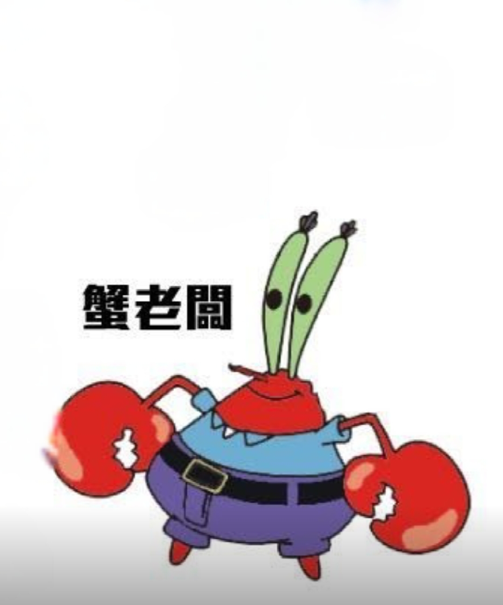
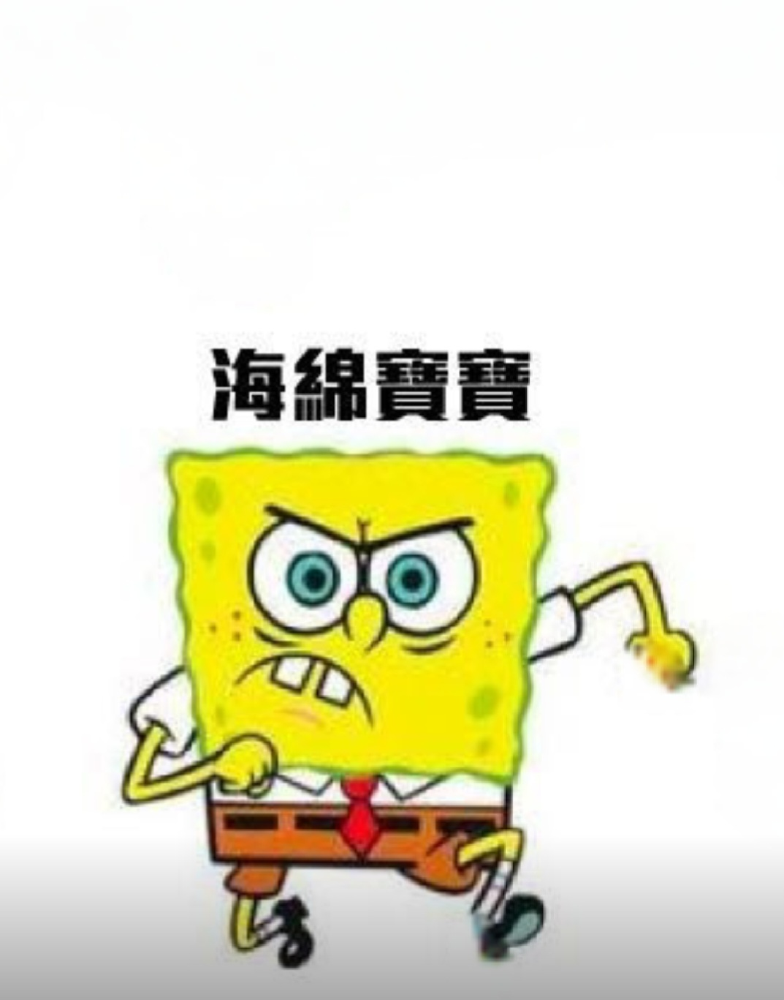
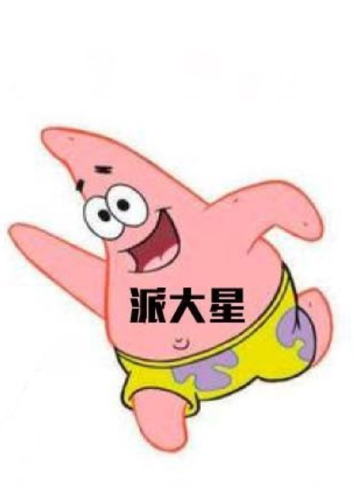

蟹尤金，字阿洛（Eugene Harold Krabs），比奇堡著名快餐店蟹堡王餐廳的老闆，視錢如命，和女兒珍珍住在船錨屋。
蟹老闆最喜歡的東西就是錢，沒有什麼比錢都還要重要，非常吝嗇，對員工刻薄，卻經營著比奇堡人氣美食蟹堡王餐廳。

外觀為黃色的方形海綿，住在比奇堡郊區的鳳梨屋，擔任蟹堡王餐廳的廚師。
最好的朋友是派大星。海綿寶寶個性活潑、善良且無私，對朋友忠誠，總是努力完成任務，卻常因天真惹人厭煩或被操控。他害怕黑暗與小丑，偶爾因愚昧陷入危險，雖然讓鄰居章魚哥頭痛，但仍深受朋友喜愛。
蟹堡王的收銀員，個性冷淡，對低薪與老闆吝嗇的態度感到不滿。
章魚哥是憤世嫉俗的章魚，痛恨海綿寶寶、派大星及蟹老闆，冷漠又傲慢。他愛藝術與音樂，自視甚高卻才藝平庸，厭惡蟹堡王工作，常被鬧煩卻懶得辭職。

海綿寶寶最好的朋友，個性憨厚，經常陪伴海綿寶寶歷險。
派大星是天真、懶惰又有禮貌的海星，無鼻子居住在貝殼街120號，偶爾顯露智慧但常忘記基本行為。雖善意出發，如害泡芙阿姨被捕，但也有英勇時刻。他比海綿寶寶更能察覺惡意與諷刺，但性格憨厚可愛。
海綿寶寶的朋友，擅長科學與武術，住在玻璃圓頂下。
珊迪是一位樂觀開朗的科學家、發明家和探險家，擅長運動和空手道。她與海綿寶寶和派大星有著親密關係，發明了多種裝置，並獲得了牛仔競技、馬術賽冠軍及空手道特黑帶。她需要冬眠。